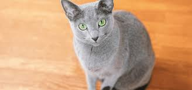

ロシアンブルー

- 品種
- ロシアンブルー
- 性格
-
静かで落ち着いている
飼い主に忠実
繊細で慎重 - 鳴く頻度
-
とても少ない
小さな声で控えめ - 平均体重
- 3〜5kg
- 平均寿命
- 15〜20年
- 名前の由来
- ロシア原産と青灰色の毛色から
ロシアンブルーの特徴
ロシアンブルーは、 上品で静かな雰囲気を持つ猫種です。
無駄に鳴くことはほとんどなく、 落ち着いた環境を好みます。
飼い主には深い愛情を示しますが、 初対面の人には距離を取る慎重さがあります。
環境の変化に敏感なため、 静かで安定した生活が向いています。
信頼関係が築けると、 控えめながらも強い絆を感じられる猫です。